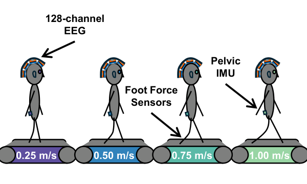
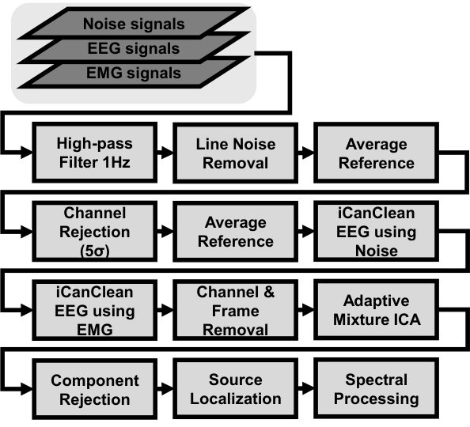
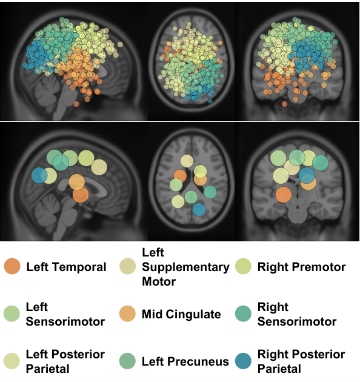
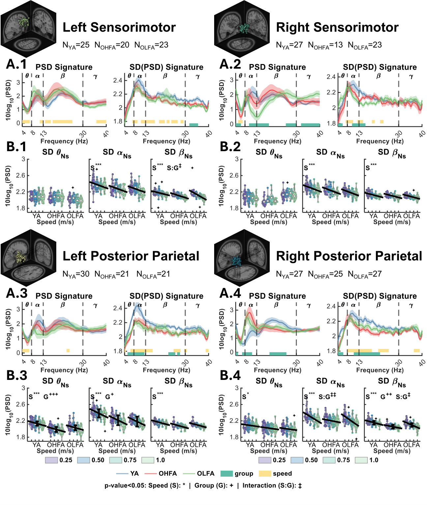
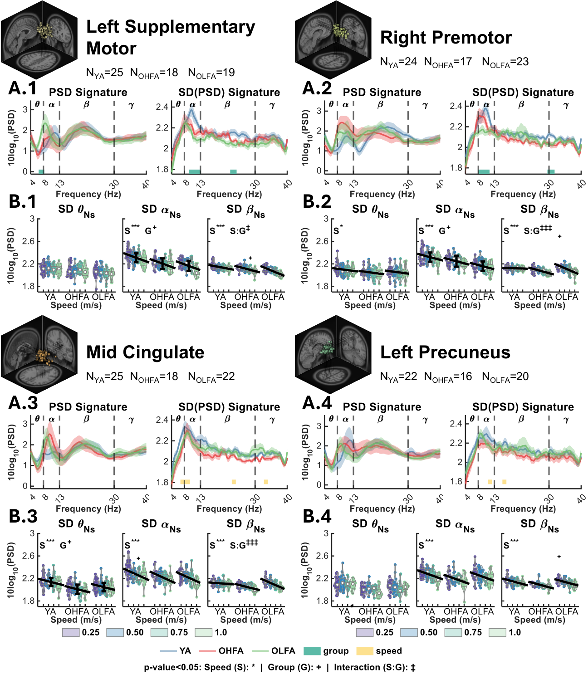
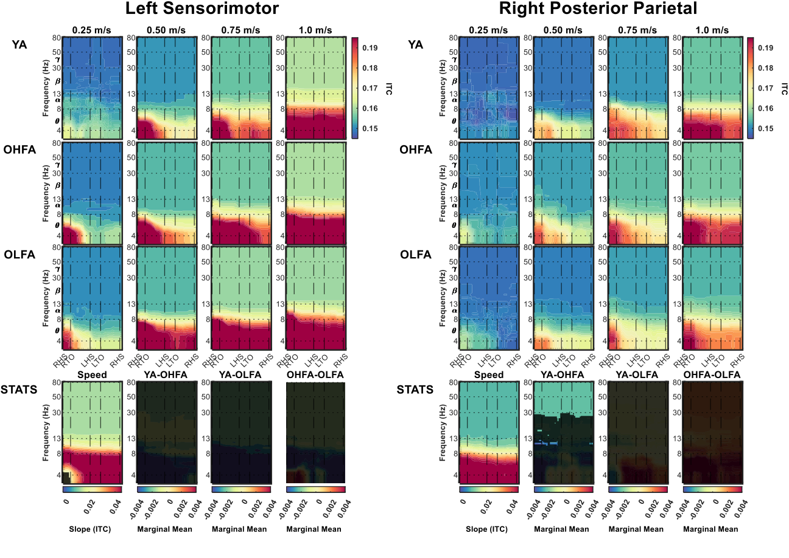
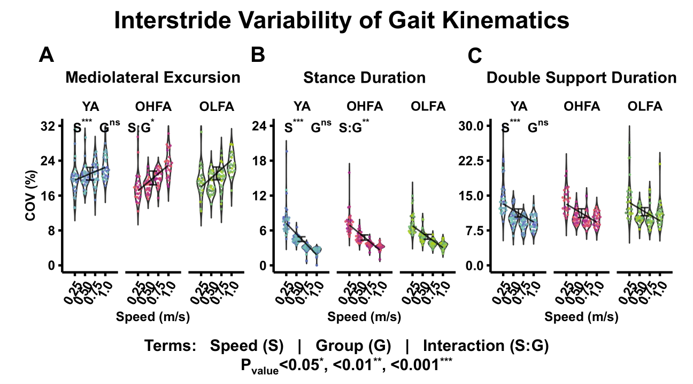

The plain-language version
Walking looks simple, but it is the brain coordinating the body across thousands of small adjustments — one for every stride. This paper asks a question most EEG studies skip over: how much do those neural patterns actually vary from one stride to the next, and does that variability change as we age or speed up?
We had younger and older adults walk on a treadmill at several gait speeds while we recorded high-density EEG and gait kinematics. Instead of averaging across long windows, we computed power spectra stride by stride, which gave us a distribution of cortical activity per condition rather than a single mean.
Why this matters
Most mobile EEG studies of walking summarize cortical activity into a single number per condition. That hides exactly the thing aging research cares about: variability. Older adults often show greater stride-to-stride biomechanical variability, and we wanted to know whether the neural signal mirrors that — and whether the relationship strengthens or weakens with gait speed. Treating variability as the signal, not the noise, opens a tighter coupling between EEG and clinically meaningful measures of mobility decline.
What we found
Interstride EEG variability is structured, speed-dependent, and differs between age groups in ways that connect to mediolateral gait excursion. The full results, including all spectral bands and statistical tests, are in the manuscript.
Figures
Each preview links to the original vector PDF. Click any figure to open the full-resolution version in a new tab.

PDF
PDF
PDF
PDF
PDF
PDF
PDF